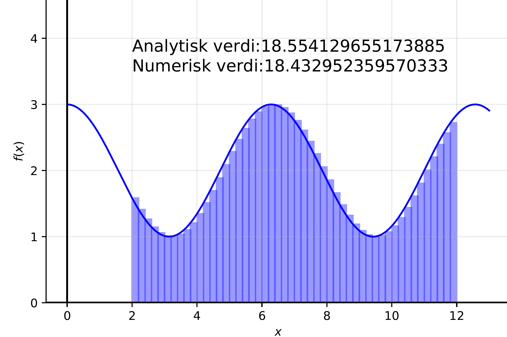
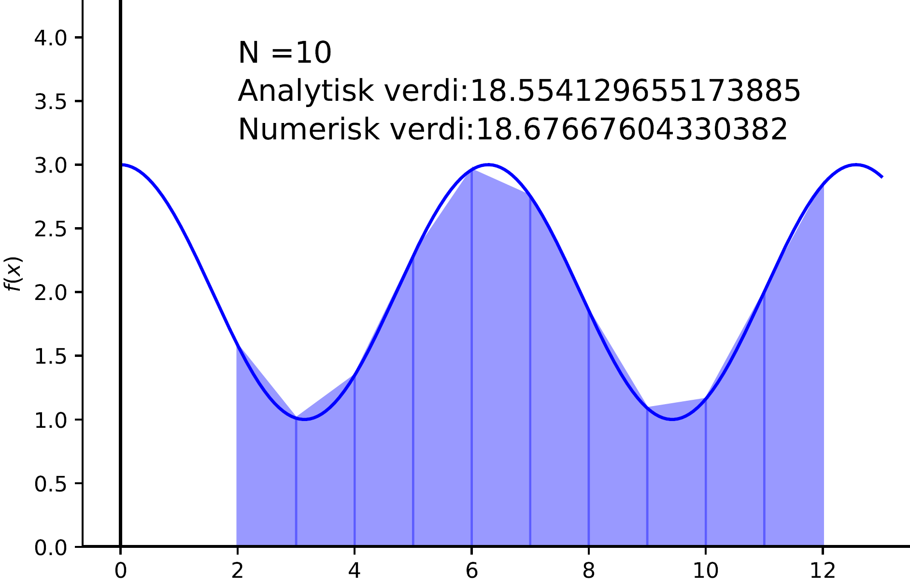
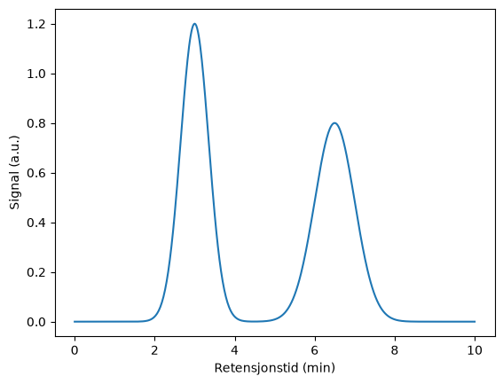

Numerisk integrasjon#
Læringsutbytte
Etter å ha arbeidet med dette temaet, skal du kunne:
forklare hvordan et bestemt integral kan tilnærmes som en sum av små arealer
implementere og forklare forskjellen på venstre-, høyre- og midtpunktstilnærming
forklare og implementere trapesmetoden
sammenlikne numeriske metoder ved hjelp av feil og konvergens
integrere funksjoner og eksperimentelle data med SciPy
tolke integraler i en kjemisk sammenheng
Integrasjon#
Du kjenner integrasjon både som en metode for å finne arealet under en graf og som den motsatte operasjonen av derivasjon. I dette kapitlet er vi først og fremst opptatt av bestemte integraler, altså integraler mellom to grenser \(a\) og \(b\).
En datamaskin arbeider med endelige tall og diskrete punkter. Vi skal derfor ikke be datamaskinen om å «finne en antiderivert» på samme måte som vi gjør symbolsk. I stedet tilnærmer vi arealet under grafen ved å dele det opp i mange små biter.
Integraler i kjemi#
Numerisk integrasjon dukker opp mange steder i kjemi, for eksempel når vi beregner
arealet under en kromatografisk topp
arealet under et NMR-signal
samlet varme eller strøm over tid
integraler som inngår i numeriske løsninger av differensiallikninger
Den store fordelen med numerisk integrasjon er at vi også kan integrere måledata, der vi ikke nødvendigvis har noen analytisk funksjon.
Rektangelmetoden: fra integral til Riemann-sum#
Det bestemte integralet kan forstås som grenseverdien av en Riemann-sum: Vi deler området under grafen i smale striper og tilnærmer hver stripe med en enkel geometrisk figur. Den enkleste figuren er et rektangel.

Her er intervallet delt i 10 rektangler. Hvis intervallet er \([a,b]\) og vi bruker \(n\) rektangler, er bredden
I figuren bestemmes høyden av funksjonsverdien ved venstre kant av hvert rektangel. Da får vi venstretilnærmingen.
Øker vi antall rektangler, følger rektanglene grafen bedre:
{kind=link}

Dette er den grunnleggende ideen bak numerisk integrasjon: flere og smalere geometriske figurer gir vanligvis en bedre tilnærming.
Venstretilnærming#
Vi begynner med koden uten å lage en funksjon. Da er det lettere å forstå algoritmen:
import numpy as np
import matplotlib.pyplot as plt
def f(x):
return np.cos(x) + 2
a = 2
b = 12
n = 10
h = (b - a) / n
areal = 0.0
x = a
for k in range(n):
areal = areal + f(x) * h
x = x + h
print("Numerisk areal:", areal)
Numerisk areal: 18.046675645664006
Løkken gjør nøyaktig det figuren viser: beregn arealet av ett rektangel, legg det til totalen, flytt \(x\) én rektangelbredde og gjenta.
Når algoritmen er forståelig, pakker vi den inn i en funksjon:
def rektangel_venstre(f, a, b, n):
h = (b - a) / n
areal = 0.0
x = a
for k in range(n):
areal = areal + f(x) * h
x = x + h
return areal
Hvor skal vi måle høyden?#
Venstrekanten er bare ett mulig valg. For en voksende funksjon vil venstretilnærmingen systematisk ligge under grafen:

Hvis vi i stedet måler høyden på høyre kant, får vi en tilsvarende overestimering:

Dette er et viktig poeng: Det finnes flere måter å tilnærme det samme arealet på. Høyretilnærmingen krever bare én liten endring i algoritmen – vi starter på \(a+h\) i stedet for \(a\).
def rektangel_hoyre(f, a, b, n):
h = (b - a) / n
areal = 0.0
x = a + h
for k in range(n):
areal = areal + f(x) * h
x = x + h
return areal
Midtpunktstilnærming#
Når venstre kant gir for lite areal og høyre kant gir for mye, er det naturlig å spørre om vi kan velge et punkt mellom dem. Vi bruker da funksjonsverdien i midten av hvert delintervall:

For en lineær funksjon blir feilarealet over og under grafen like stort, og midtpunktstilnærmingen blir eksakt. Også for mange krumme funksjoner er den betydelig bedre enn venstre- og høyretilnærmingen.
def rektangel_midt(f, a, b, n):
h = (b - a) / n
areal = 0.0
x = a + h/2
for k in range(n):
areal = areal + f(x) * h
x = x + h
return areal
eksakt = (np.sin(12) + 2*12) - (np.sin(2) + 2*2)
print("Venstre:", rektangel_venstre(f, 2, 12, 10))
print("Høyre:", rektangel_hoyre(f, 2, 12, 10))
print("Midtpunkt:", rektangel_midt(f, 2, 12, 10))
print("Eksakt:", eksakt)
Venstre: 18.046675645664006
Høyre: 19.306676440943637
Midtpunkt: 18.492080387461613
Eksakt: 18.554129655173885
Prøv selv#
Fullfør rektangelmetodene og undersøk hvordan resultatet endres når du øker antall rektangler.
Konvergens#
Et numerisk svar bør ikke vurderes ut fra ett enkelt valg av \(n\). Vi kan øke antall intervaller og undersøke om resultatet stabiliserer seg, for eksempel slik:
n_verdier = [10, 20, 50, 100, 200, 500, 1000]
print(" n venstre-feil midtpunkt-feil")
for n in n_verdier:
feil_v = abs(rektangel_venstre(f, a, b, n) - eksakt)
feil_m = abs(rektangel_midt(f, a, b, n) - eksakt)
print(f"{n:4d} {feil_v:12.6f} {feil_m:14.6f}")
n venstre-feil midtpunkt-feil
10 0.507454 0.062049
20 0.284752 0.015172
50 0.121177 0.002413
100 0.061795 0.000603
200 0.031199 0.000151
500 0.012552 0.000024
1000 0.006288 0.000006
Trapesmetoden#
Rektangelmetodene antar at toppen av hver lille figur er horisontal. Med andre ord erstatter vi funksjonen lokalt med en konstant verdi. Det fungerer, men hvis funksjonen endrer seg tydelig gjennom intervallet, kaster vi bort informasjon.
En naturlig forbedring er å trekke en rett linje mellom de to endepunktene. Da får vi et trapes i stedet for et rektangel:

For ett delintervall med bredde \(h\) er de to parallelle sidene \(f(x_i)\) og \(f(x_{i+1})\). Arealet blir derfor
For hele intervallet summerer vi ett slikt trapes for hvert delintervall. Vi kan skrive dette som
Først implementerer vi igjen algoritmen helt konkret:
def f(x):
return x**3
a = 0
b = 5
n = 100
h = (b - a) / n
areal = 0.0
x = a
for k in range(n):
areal = areal + (f(x) + f(x + h))/2 * h
x = x + h
print("Trapes:", areal)
Trapes: 156.2656249999993
Deretter kan vi pakke nøyaktig den samme løkken inn i en funksjon:
def trapesmetoden(f, a, b, n):
h = (b - a) / n
areal = 0.0
x = a
for k in range(n):
areal = areal + (f(x) + f(x + h))/2 * h
x = x + h
return areal
print("Trapes:", trapesmetoden(f, 0, 5, 100))
print("Eksakt:", 156.25)
Trapes: 156.2656249999993
Eksakt: 156.25
Når antallet trapeser øker, følger de rette linjestykkene grafen stadig bedre:
{kind=link}

Simpsons metode#
Vi kan se rektangel- og trapesmetoden som en liten progresjon:
rektangel: funksjonen tilnærmes lokalt med en konstant
trapes: funksjonen tilnærmes lokalt med en rett linje
Neste steg er å bruke et krumt toppstykke. Simpsons metode bruker andregradspolynomer over par av delintervaller. Det gir ofte svært god nøyaktighet for glatte funksjoner.
For et partall \(n\) kan metoden skrives
Koden er litt mindre intuitiv enn rektangel- og trapesmetoden. Derfor er målet først og fremst å kjenne igjen strukturen i formelen.
def simpsons_metode(f, a, b, n):
if n % 2 != 0:
print("n må være et partall.")
return None
h = (b - a) / n
areal = f(a) + f(b)
x = a + h
for k in range(1, n):
if k % 2 == 0:
areal = areal + 2*f(x)
else:
areal = areal + 4*f(x)
x = x + h
return areal * h/3
print("Simpson:", simpsons_metode(f, 0, 5, 100))
Simpson: 156.24999999999935
Rektangelmetodene, trapesmetoden og Simpsons metode tilhører samme familie av integrasjonsmetoder, Newton–Cotes-metoder. Vi trenger ikke lære hele familien; poenget er å se hvordan bedre tilnærminger kan bygges ved å bruke mer informasjon om formen på funksjonen.
Bruk av biblioteker#
Når vi har forstått prinsippet, kan vi bruke ferdige funksjoner. I moderne SciPy heter de relevante funksjonene blant annet:
integrate.trapezoid(y, x)for diskrete dataintegrate.simpson(y, x=x)for diskrete dataintegrate.quad(f, a, b)for en funksjon
trapezoid og simpson er de moderne navnene; eldre kode kan inneholde de utgåtte navnene trapz og simps.
from scipy import integrate
import numpy as np
x = np.linspace(0, 5, 1001)
y = f(x)
trapes = integrate.trapezoid(y, x)
simpson = integrate.simpson(y, x=x)
quad_verdi, quad_feil = integrate.quad(f, 0, 5)
print("trapezoid:", trapes)
print("simpson:", simpson)
print("quad:", quad_verdi)
print("estimert absolutt feil fra quad:", quad_feil)
trapezoid: 156.25015624999997
simpson: 156.25
quad: 156.25000000000003
estimert absolutt feil fra quad: 1.7347234759768075e-12
Kjemisk eksempel: areal under et kromatogram#
Et kromatogram består av signal som funksjon av retensjonstid. Arealet under en topp kan være proporsjonalt med stoffmengden eller konsentrasjonen etter en passende kalibrering.
Her lager vi et enkelt kunstig kromatogram med to topper og integrerer signalet numerisk. Poenget er at vi nå integrerer målepunkter, ikke en symbolsk funksjon.
import matplotlib.pyplot as plt
tid = np.linspace(0, 10, 501)
topp_1 = 1.2*np.exp(-0.5*((tid - 3.0)/0.35)**2)
topp_2 = 0.8*np.exp(-0.5*((tid - 6.5)/0.50)**2)
signal = topp_1 + topp_2
plt.plot(tid, signal)
plt.xlabel("Retensjonstid (min)")
plt.ylabel("Signal (a.u.)")
plt.show()

maske_1 = (tid >= 2.0) & (tid <= 4.2)
maske_2 = (tid >= 5.0) & (tid <= 8.0)
areal_1 = integrate.trapezoid(signal[maske_1], tid[maske_1])
areal_2 = integrate.trapezoid(signal[maske_2], tid[maske_2])
print(f"Areal topp 1: {areal_1:.3f} a.u.·min")
print(f"Areal topp 2: {areal_2:.3f} a.u.·min")
print(f"Arealforhold topp 1 / topp 2: {areal_1/areal_2:.3f}")
Areal topp 1: 1.050 a.u.·min
Areal topp 2: 1.000 a.u.·min
Arealforhold topp 1 / topp 2: 1.050
Tolkning av enheter
Et integral får enheten til \(y\) multiplisert med enheten til \(x\). Hvis signalet er i mAU og tiden i minutter, blir topparealet i mAU·min. En kalibreringsmodell kan deretter knytte arealet til konsentrasjon eller stoffmengde.
Videre utforskning: multippel integrasjon#
I enkelte deler av kjemien, særlig kvantekjemi og statistisk termodynamikk, møter vi integraler over flere variabler. SciPy har også funksjoner som dblquad og tplquad. Dette er nyttig å kjenne til, men er ikke et hovedmål i dette kapitlet.
def g(y, x):
return x*np.sin(y) - y*np.exp(x)
dobbel, feil = integrate.dblquad(g, -1, 1, 0, np.pi/2)
print("Dobbeltintegral:", dobbel)
Dobbeltintegral: -2.899692718238082
Kort oppsummering#
Numerisk integrasjon summerer små bidrag over et intervall.
Rektangel-, trapes- og Simpson-metodene bruker ulike tilnærminger mellom punktene.
Et numerisk resultat bør kontrolleres ved å endre steglengde eller antall intervaller.
For eksperimentelle data er
trapezoidogsimpsonsærlig nyttige.Integralets enhet og kjemiske betydning må alltid tolkes sammen med dataene.
Oppgaver#
Oppgave 1 – rektangelmetoder
Integrer \(f(x)=x^2-2x+4\) fra 2 til 8 med venstre-, høyre- og midtpunktstilnærming. Bruk først \(n=10\) og deretter \(n=100\). Sammenlikn med den analytiske verdien.
Oppgave 2 – konvergens
Lag et plott av absolutt feil som funksjon av \(n\) for venstretilnærmingen, midtpunktstilnærmingen og trapesmetoden. Bruk logaritmiske akser.
Oppgave 3 – kromatografisk topp
Lag en Gauss-formet topp med sentrum ved 5,0 min og legg til svak tilfeldig støy. Integrer toppen med trapesmetoden. Hvordan endres arealet hvis du flytter integrasjonsgrensene?
Oppgave 4 – NMR
To NMR-signaler har numeriske arealer 3,02 og 1,01. Hva kan arealforholdet tyde på om relative antall hydrogenatomer dersom responsen kan sammenliknes direkte?
Oppgave 5 – varme fra effektdata
Et kalorimeter registrerer varmeeffekt \(P(t)\) i watt hvert sekund. Forklar hvorfor integralet \(\int P(t)\,dt\) gir energi, og skriv kode som integrerer et kunstig datasett. Hvilken enhet får svaret?
Oppgave 6 – metodevalg
Når vil du bruke quad, og når vil du bruke trapezoid? Gi ett kjemisk eksempel på hver.
Oppgave 7 – Simpson
Implementer Simpsons metode selv. Sammenlikn med scipy.integrate.simpson for \(f(x)=\cos x + 2\) på intervallet \([2,12]\).
Oppgave 8 – vanskelig funksjon
Studer \(f(x)=\sin(1/x)\) nær \(x=0\). Plott funksjonen og undersøk hvordan forskjellige integrasjonsgrenser og oppløsninger påvirker resultatet. Forklar hvorfor dette er et numerisk krevende problem.